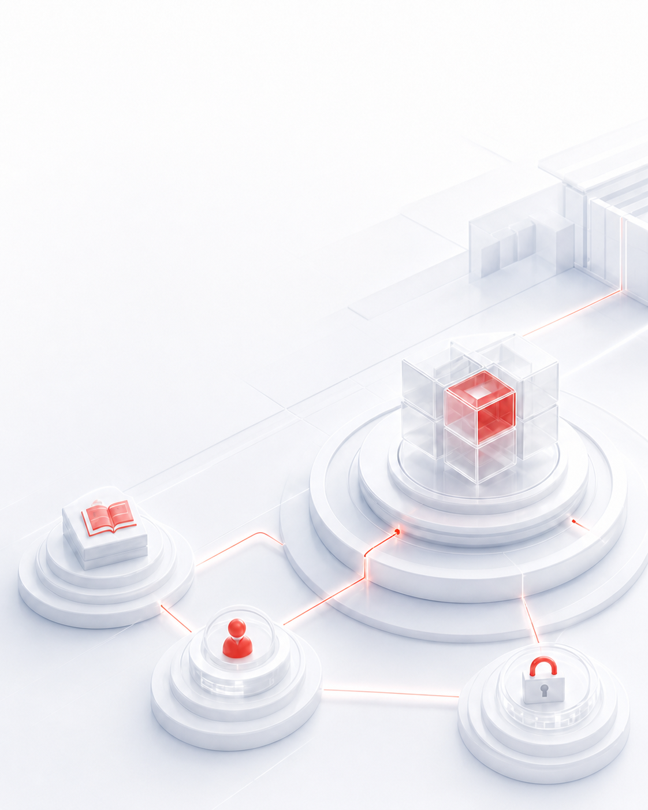
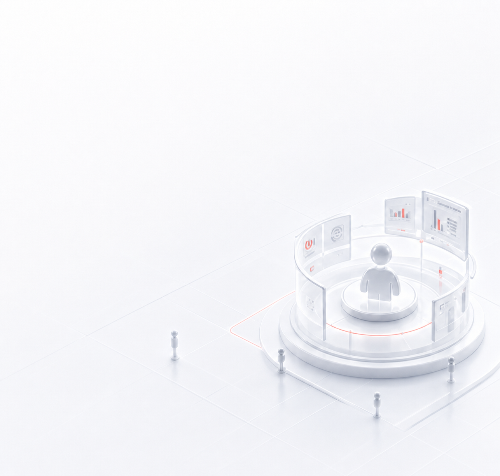
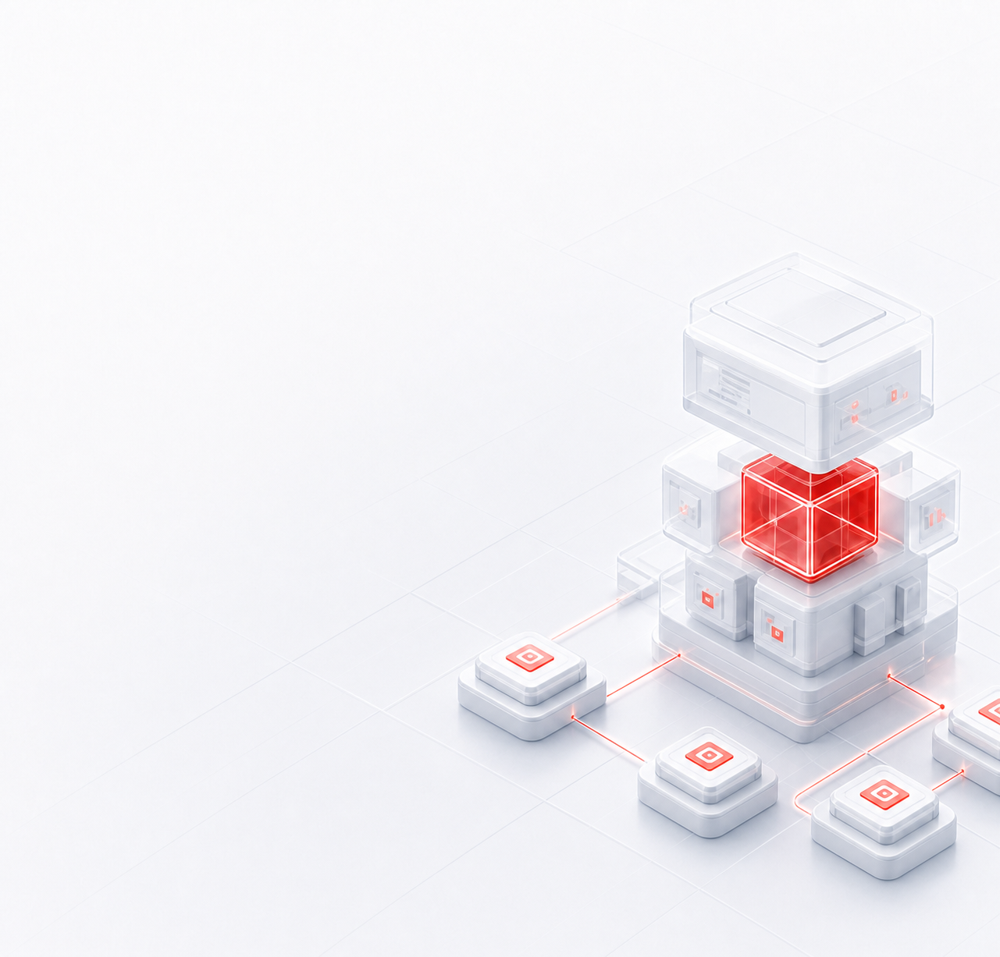
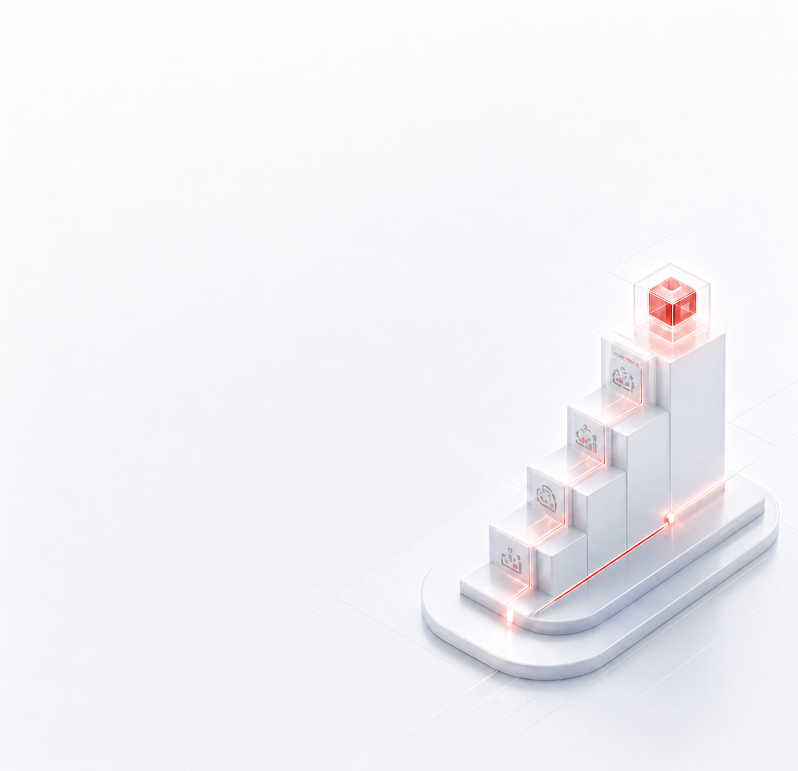
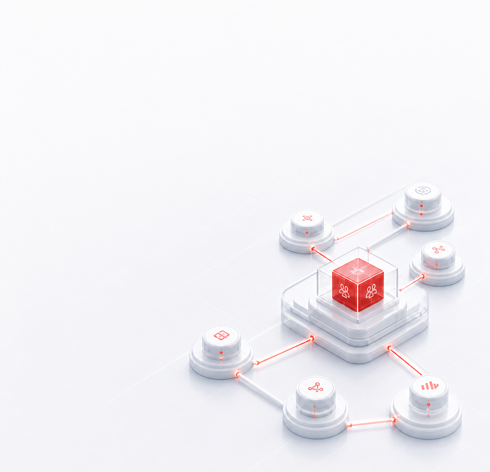

五类解决方案，匹配不同建设目标
从当前问题、适用对象和最终结果判断方向。五类方案可独立建设，也可按组织基础组合实施。




六项能力，形成一套持续落地体系
先理解教育业务，再完成规划、建设、治理、智能应用和长期运营。
- 01
教育理解能力
理解政策、组织角色与真实教育业务。
识别真实问题 - 02
咨询规划能力
明确目标、建设边界和实施优先级。
建立实施共识 - 03
数字平台能力
建设稳定、开放、可持续演进的平台。
承载业务增长 - 04
数据治理能力
统一标准，沉淀可分析、可复用的数据资产。
形成数据资产 - 05
AI 应用能力
让模型、知识与智能体进入实际流程。
嵌入业务流程 - 06
运营服务能力
持续推广、支持、评价并优化建设成果。
持续产生价值
从现状诊断到持续运营
项目不止于上线，同步推进业务梳理、用户培训、应用推广与成效评价。
现状诊断
调研需求、流程、数据基础与应用机会。
方案设计
明确总体架构、业务场景与实施顺序。
开发建设
完成平台、资源、数据与智能能力建设。
应用推广
开展试点、培训、使用支持与反馈优化。
持续运营
跟踪成效、更新内容并持续迭代能力。